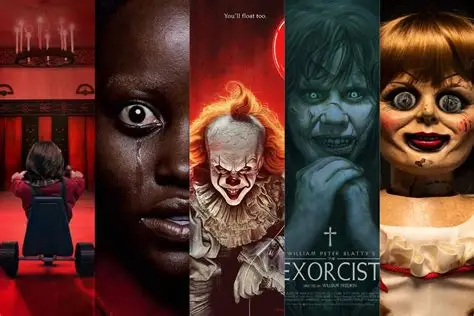

Horror is a film genre that seeks to elicit physical or psychological fear in its viewers. Horror films often explore dark subject matter and may deal with transgressive topics or themes. Broad elements of the genre include monsters, apocalyptic events, and religious or folk beliefs.
Why People Love Horror
Horror is one of the most enduringly popular film genres in many areas around the world. While many people willingly buy tickets to the latest release, in our daily lives we often try to avoid anything that frightens us. So why would we pay to watch a movie that induces fear and terror? Horror scholar Mathias Clasen suggests that a tendency to love horror can be traced back to the constant danger our ancient ancestors experienced in the environments where they lived. Constant vigilance was required to avoid becoming the prey of a larger or more deadly animal. Horror movies are a risk-free way to vicariously experience threats and rehearse one's responses to those threats. Plus, after people get through a horror movie unscathed, they may feel a sense of accomplishment and mastery over the threat they've experienced,which then leads them to feel more confident in their ability to handle other anxiety-provoking situations.
